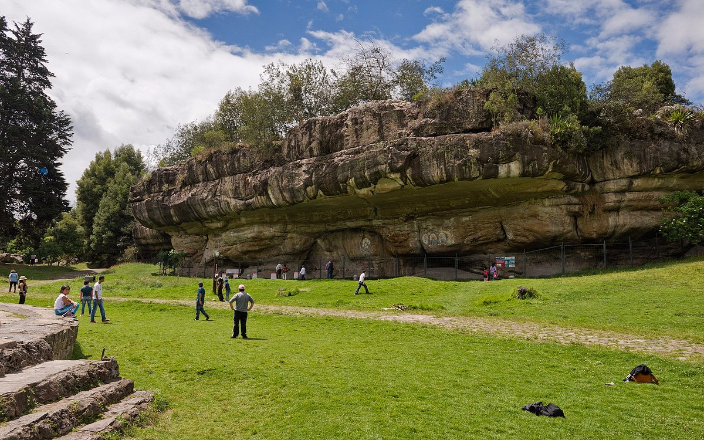

Reseña Historica
Adquirido por el Ministerio de la Cultura en 1945 y declarado parque arqueológico en 1946. Fue entregado a la Corporación Autónoma Regional -CAR- en 1988 para su administración y manejo. A partir del 2006 el Ministerio de Cultura delegó al ICANH la supervisión del comodato del parque a cargo de la CAR.
Facatativá o Totacativá, como fue llamada originalmente, es una región de gran relevancia para el estudio de las culturas del pasado. En este municipio se encuentran abrigos rocosos con un sinnúmero de pinturas rupestres que conforman un importante patrimonio arqueológico.
Esta importancia histórica y patrimonial fue reconocida en la década de los treinta cuando se constituyó el Parque Arqueológico de Facatativá, como el primer intento del Estado por adquirir predios con patrimonio arqueológico para su protección, investigación y disfrute. Es el único parque arqueológico ubicado en un contexto urbano y uno de los principales parques naturales cercanos a la ciudad de Bogotá.
Infortunadamente, por más de 70 años ha sido explotado como lugar de recreación activa, impactando negativamente el medioambiente y el patrimonio arqueológico del parque. Por está razón, para su recuperación es necesario transformarlo en un lugar donde lo prioritario sea la protección del patrimonio arqueológico del parque, su divulgación y protección.